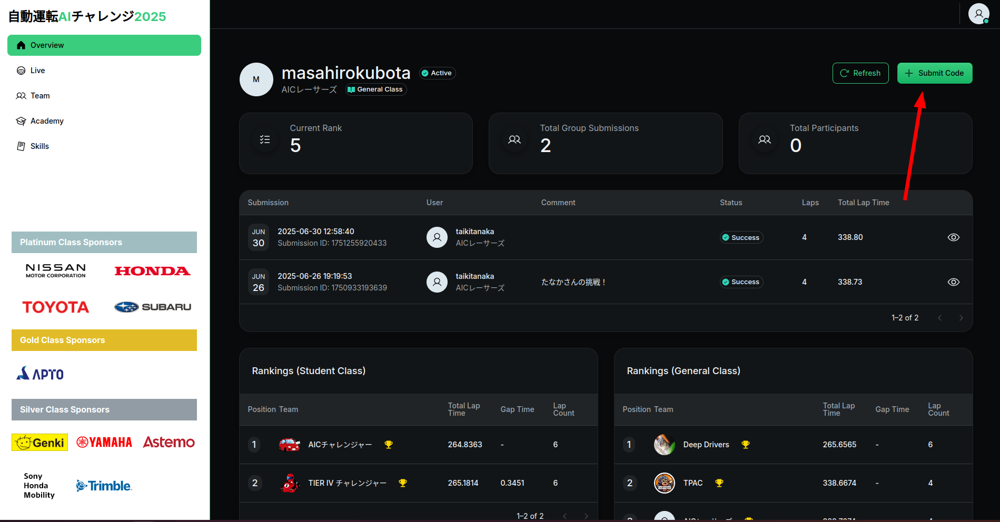

はじめ方
このページではAIチャレンジでの一連の流れを記載します。
本大会ではUbuntu 22.04を搭載したPC一台のみで参加ができます。
まずオンライン採点環境の利用を行い、その後環境構築・開発と進んでいきます。
1. 自動運転AIチャレンジへの参加登録
今年度の大会の参加登録は 参加登録フォームから
2. オンライン採点環境へのアクセス
本大会では、オンライン環境に提出ファイル（ソースコードの圧縮ファイル）をアップロードすることで自動採点が行われ、順位が決定されます。
次の2ステップでまずはオンライン採点環境を使ってみましょう！
Info
オンライン採点環境へのアクセスから提出までの所要時間は5分程度です
-
自動運転AIチャレンジの参加登録後、ログイン情報が登録メールアドレスに送られてきます。
-
オンライン採点環境にアクセスし、メールアドレス記載の資格情報を用いてログインしてください。
3. サンプルコードの提出
-
アクセスが出来たら、一度ソースコードの提出をしてみましょう。 下の赤ボタンからサンプルコードの圧縮ファイルをダウンロードします。
-
オンライン採点環境の「Submit Code」ボタンからそのままアップロードすることで提出ができます。

4. チームのアイコンを設定する
チームのアイコンの設定をお願いいたします。アイコンの作成においては、ChatGPTなどの生成AIを活用するのも効果的です。 作成したアイコンは、SDVスキル標準に基づいた保有スキルの一覧表にも掲載されます。
5. AIチャレンジの環境構築
サンプルコードが提出できたら、次は開発環境の構築を行いましょう。
Note
本大会ではUbuntu 22.04を搭載したPC一台のみで参加ができます。
8. 提出したコードがうまく動かないとき
提出したコードが動かないときはaichallenge-2025/output/2025-$DATE-$TIME/autoware.logをみてみましょう。
[INFO] [launch]: All log files can be found below $USER/.ros/log/2025-07-25-15-39-51-817891-XXX
[INFO] [launch]: Default logging verbosity is set to INFO
[INFO] [launch.user]: The arguments for aichallenge_system_launch.
[INFO] [launch.user]: - simulation: true
[INFO] [launch.user]: - use_sim_time: true
[INFO] [launch.user]: - sensor_model: racing_kart_sensor_kit
[INFO] [launch.user]: - launch_vehicle_interface: true
[INFO] [launch.user]: - rviz config: /aichallenge/workspace/install/aichallenge_system_launch/share/aichallenge_system_launch/config/autoware.rviz
↓↓↓↓↓↓↓↓
[ERROR] [launch]: Caught exception in launch (see debug for traceback): "package 'aichallenge_submit_launch' not found, searching: ['/aichallenge/workspace/install/simple_trajectory_generator', '/aichallenge/workspace/install/simple_pure_pursuit', '/aichallenge/workspace/install/racing_kart_sensor_kit_description', '/aichallenge/workspace/install/racing_kart_gnss_poser', '/
↑↑↑↑↑↑↑↑
aichallenge/workspace/buildとaichallenge/workspace/installとaichallenge/workspace/logなどを確認し、一度削除してからもう一度buildしてログを収集してみましょう。
手元でどの方法でもエラーが再現できない場合は、下記の情報と共に質問チャンネルでお問い合わせください。
1. https://aichallenge-board.jsae.or.jp/public/submissions のID、日時などの情報
2. 手元でやってみたことの手順の共有
3. もともとのサンプルコードとの差分、どのような変更を加えたのかの説明
4. ログの情報、その他思い当たる節がありそうな部分の共有
9. AIを活用した練習教材を試してみる（任意）
Autowareの基本を習得した後、さらに技術の幅を広げたい方向けに、機械学習を活用した練習教材をご用意しています。
こんな方におすすめ：
-
従来手法だけでなく、最新のAI技術にも触れてみたい
-
時間に余裕があり、追加の学習にチャレンジしたい
-
自動運転×AIの分野に興味がある
完全に任意の教材です
この教材は競技の採点には一切影響しません。純粋に技術的な興味から取り組んでいただく内容です。